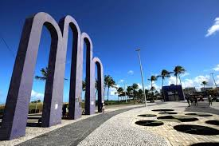

Praia de Atalaia

Roteiro turistíco em 1 dia
Na orla de Atalaia existem opções de lazer como bares e casas de dança e música,álem de barracas de água de coco e quadras de basquete, futeboll, tênis e uma pista de skate .Considerada uma das mais bonitas do Brasil, oferece aos cidadões e turistas o que há de melhor em lazer e entetenimento.